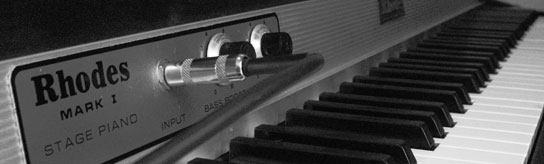

ABOUT THE RHODES PIANO

Around 1969/70 I heard a recording of pianist Herbie Hancock playing an instrument that immediately attracted my attention for the originality and warmth of its sound: the Fender Rhodes electric piano. Quickly other pianists, such as Joe Zawinul and Chick Corea, began to use it in their recordings as well as in their live performances, generating a wave of enthusiasm for this instrument that spread all over the planet.
At the beginning of 1971 I traveled to New York and brought one with me, the first one that entered Argentina. It was the original model that consisted of two parts, the keyboard itself and the amplifier that served as its base. Each of the parts weighed about seventy kilos, a large car was required to transport them.
The Rhodes is an instrument of simple conception and very effective: the sound is produced acoustically by means of a hammer that when pressing the key percusses on a resonator (a kind of tuning fork) that generates a very weak sound. In front of each resonator there is a small coil that acts as a microphone and transmits the sound to the amplifier. So the Rhodes is an electro-acoustic instrument, similar in its conception to the electric guitar. I recorded with it the two albums of Quinteplus, the band I was playing with at the time; the LP Dedicatoria by Dino Saluzzi; Con amigos, by the American band Stone Alliance that came to Buenos Aires to record here; I also used it in several productions with my own band, and I participated as a guest in countless recording sessions with rock and pop singers and bands.
I must say that many of the great jazz pianists never accepted the Rhodes. Oscar Peterson, McCoy Tyner, Ahmad Jamal and Keith Jarret, for example, remained faithful to the acoustic piano sound. Bill Evans recorded only one album with the Rhodes and it's not his best output. I believe that this resistance of many jazz musicians to the electric piano is due, among other causes, to a certain weakness in the attack that robs the sound of the "punch" that the jazz style requires.